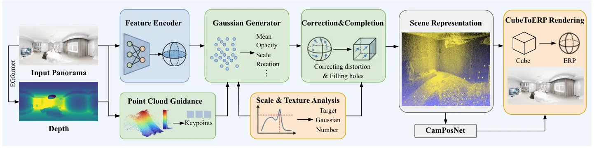
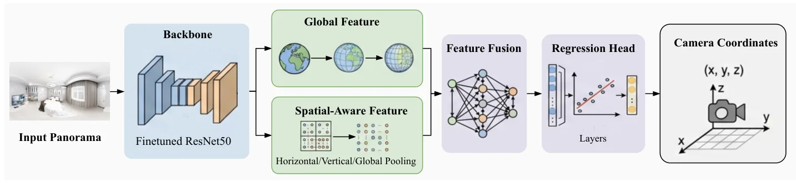
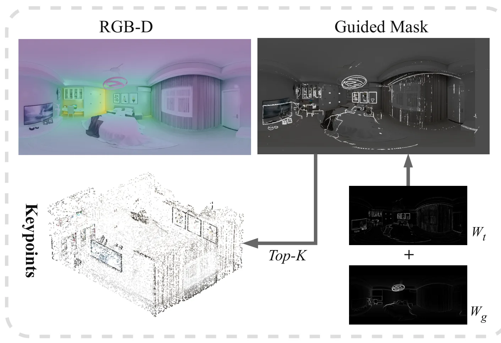
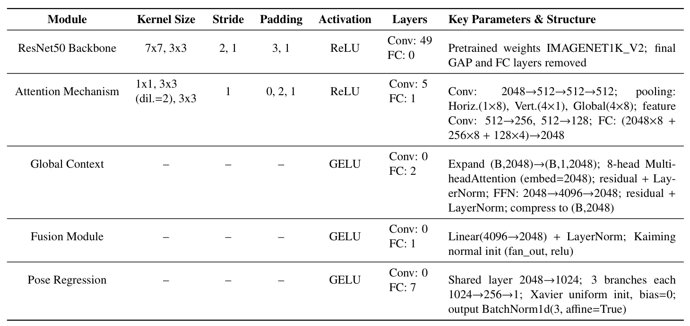

FastPano3D：单张全景图的前馈式室内 3D 重建FastPano3D: Feed-Forward Indoor Panoramic 3D Reconstruction from a Single Image
与快速三维重建、全景感知和 3DGS 表示相关；偏生成式重建，几何真实性和尺度稳定性需重点核查。
一句话工作总结
单图全景到 3DGS 的秒级前馈重建适合快速室内场景资产生成，但要服务机器人地图还需验证几何尺度与遮挡补全可靠性。
摘要
FastPano3D 面向从单张 panoramic image 快速生成可渲染 3D Gaussian 表示。与依赖多视图监督或每场景优化的 NeRF/3DGS 方法不同，它采用轻量特征编码器、自适应 Gaussian sampling 和 point-cloud-guided refinement，在没有 test-time optimization 的情况下处理全景图的等距柱状投影畸变和空间特征非均匀问题。作者称该方法可在数秒内重建高保真室内 3D 场景，相比 Pano2Room 最高加速 156 倍且参数量减半，渲染质量接近现有 NeRF/3DGS 重建方法。
Recent advances in 3D scene reconstruction have highlighted the intricate trade-offs among rendering quality, inference efficiency, and data dependency. To address the challenge of rapidly reconstructing detailed 3D indoor scenes from minimal input, we introduce FastPano3D, an end-to-end framework that directly generates renderable 3D Gaussian representations from a single panoramic image. Unlike perspective-based methods, panoramic images inherently suffer from equirectangular projection distortions and spatially non-uniform feature distributions, making direct feed-forward Gaussian generation particularly challenging. In contrast to existing Gaussian Splatting based methods that rely on multi-view supervision or per-scene optimization, FastPano3D employs a lightweight feature encoder, adaptive Gaussian sampling, and a point-cloud-guided refinement strategy to achieve efficient and accurate scene generation without any test-time optimization. Our approach reconstructs high-fidelity 3D scenes within seconds, achieving up to 156 times faster inference than prior state-of-the-art methods such as Pano2Room, while using only half the parameters. Extensive experiments demonstrate that FastPano3D delivers rendering quality comparable to NeRF- and 3DGS-based reconstructions, establishing a new benchmark for rapid, single-view 3D scene inference.
中文解读摘录
- 为什么看：面向“单张 panoramic image 秒级生成可渲染 3D Gaussian 表示”，适合关注快速室内场景资产生成和低成本重建的读者。
- 方法要点：不做 test-time optimization；通过轻量特征编码器、自适应 Gaussian sampling 和 point-cloud-guided refinement，处理 equirectangular projection distortion 与全景特征空间分布不均问题。
- 结果信号：作者称相比 Pano2Room 最高 156× 加速，参数量约为一半，同时渲染质量接近 NeRF/3DGS 优化式方法。
- 跟踪建议：关注其单视角几何幻觉、尺度恢复、遮挡区域补全和跨房型泛化；若要服务机器人地图，必须验证几何准确性而不只是渲染质量。
- 链接：abs · PDF
图表/页面预览

{kind=link}

{kind=link}

{kind=link}

{kind=link}
